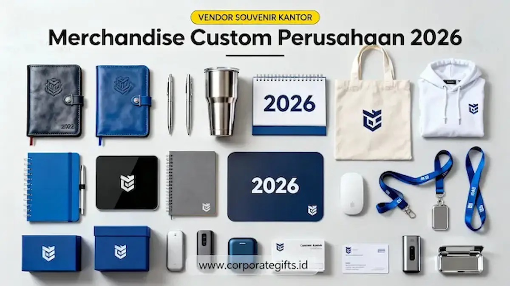

Corporate Gifts ID - Merchandise custom perusahaan 2026 adalah produk branding seperti kaos, polo shirt, topi, jaket, dan apron yang dicetak dengan logo perusahaan untuk memperkuat identitas visual, membangun kesan profesional, dan mendukung promosi jangka panjang. Produk ini umumnya digunakan sebagai seragam kerja, merchandise event tahunan, program CSR, hingga hadiah karyawan karena terbukti efektif meningkatkan brand awareness dengan efisiensi biaya promosi yang terukur.
Poin Kunci Merchandise Custom Perusahaan 2026:
- Identitas Visual Konsisten: Menciptakan standar penampilan profesional pada seluruh lini operasional dan kegiatan lapangan.
- Media Promosi Jangka Panjang: Memiliki masa pakai berulang yang memastikan eksposur logo terus berjalan tanpa biaya iklan berulang.
- Tren 2026: Didominasi oleh material eco-friendly (cotton bamboo, serat daur ulang), minimalist branding, dan sablon berkualitas tinggi.
- Kustomisasi Fleksibel: Tersedia dalam variasi bahan combed 30s, lacoste CVC pique, kanvas premium, hingga bordir komputer 3D.
Apa Itu Merchandise Custom Perusahaan 2026?
Dalam lanskap bisnis modern, merchandise custom perusahaan bukan lagi sekadar cinderamata pelengkap, melainkan bagian integral dari strategi komunikasi korporat dan employer branding.
Melalui pengadaan merchandise perusahaan yang dirancang secara profesional, sebuah institusi dapat mengomunikasikan nilai-nilai kredibilitas, kerapian, serta dedikasi terhadap mutu kepada klien, calon investor, dan publik luas.
Mengapa Merchandise Custom Tetap Menjadi Media Branding Paling Efektif?
Keunggulan merchandise custom terletak pada sentuhan fisik dan interaksi nyata yang diberikannya setiap hari. Berikut 4 alasan utama mengapa merchandise custom tetap menjadi pilihan nomor satu korporasi:
1. Memperkuat Identitas Visual
Seragam atau kaos perusahaan menciptakan standar penampilan yang seragam dan rapi. Ketika dikenakan dalam pameran bisnis, kegiatan lapangan, seminar industri, atau rutinitas kantor, apparel custom membuat brand perusahaan Anda langsung menarik perhatian dan mudah dikenali.
2. Memberikan Kesan Profesional
Apparel korporat yang dirancang dengan pola potongan rapi, bahan sejuk, dan bordir presisi mencerminkan standar kualitas perusahaan. Mitra bisnis dan klien akan memandang perusahaan Anda memiliki komitmen tinggi terhadap detail dan profesionalisme.
3. Media Promosi yang Tahan Lama (Long-Lasting)
Berbeda dengan iklan digital yang berlalu begitu saja, produk fisik seperti kaos polo katun pique atau jaket memiliki masa pakai bertahun-tahun. Sepanjang produk tersebut dipakai di ruang publik, brand awareness perusahaan Anda terus berjalan secara organik tanpa biaya tambahan.
4. Mendukung Berbagai Agenda Korporat
Merchandise apparel custom sangat serbaguna untuk menunjang berbagai kebutuhan internal maupun eksternal:
- Event tahunan dan konferensi industri.
- Gathering, outbound, dan outing karyawan kantor.
- Program Corporate Social Responsibility (CSR).
- Aktivasi promosi dan pemasaran lapangan.
- Identitas resmi tim sales, teknis, dan frontliner operasional.

Kombinasi merchandise custom eksekutif: set gift box, notebook kulit, tumbler vacuum SUS 304, lanyard, dan apparel korporat.
Tren Merchandise Custom Perusahaan 2026
Tahun 2026 membawa pergeseran signifikan pada preferensi merchandise kantor, di mana perusahaan kini mengutamakan fungsionalitas harian dan nilai keberlanjutan:
1. Material Ramah Lingkungan (Eco-Friendly)
Komitmen terhadap prinsip Environmental, Social, and Governance (ESG) mendorong pengadaan merchandise berbahan ramah lingkungan, seperti:
- Cotton Bamboo: Serat alami bertekstur sangat lembut, memiliki sifat antibakteri alami, dan sejuk di iklim tropis.
- Serat Daur Ulang & RPET Polyester: Mengubah limbah plastik menjadi kain poliester berkualitas tinggi untuk tote bag dan jaket ringan.
- Organic Cotton: Katun alami bebas pestisida sintetis yang aman untuk kulit sensitif dan tahan lama.
2. Minimalist & Subtle Branding
Era logo berukuran raksasa yang mendominasi seluruh baju kini berganti dengan konsep minimalist branding yang elegan. Logo diletakkan secara presisi di dada kiri, ujung lengan, atau berupa label tenun kecil di ujung hem. Pendekatan ini membuat pakaian tetap bergaya saat dipakai di luar jam kerja.
3. Teknik Cetak & Sablon Mutu Tinggi
Penerapan teknologi cetak mutakhir seperti Direct-to-Film (DTF) resolusi tinggi, plastisol HD, polyflex premium, hingga bordir komputer 3D menghasilkan detail logo yang sangat tajam, lentur, dan tahan cuci puluhan kali tanpa pecah.
4. Apparel Multifungsi (Work-to-Casual)
Karyawan modern menyukai pakaian yang fleksibel dipakai bekerja di kantor sekaligus nyaman untuk bersosialisasi santai selepas jam kerja. Polo shirt berbahan katun pique stretch dan jaket windbreaker ringan menjadi pilihan favorit utama.
Jenis Merchandise Custom yang Paling Diminati Perusahaan
Berikut adalah 5 kategori apparel dan aksesoris custom yang paling banyak dipesan untuk kebutuhan branding korporat:
1. Kaos Custom Perusahaan (T-Shirt)
Pilihan klasik yang sangat populer untuk acara santai, gathering, atau program promosi massal. Tersedia dalam material cotton combed 24s/30s, cotton bamboo, dan kain dryfit berpori untuk aktivitas olahraga kantor.
2. Polo Shirt Perusahaan (Lacoste Pique)
Memberikan sentuhan semi-formal yang berwibawa. Sangat pas dipakai oleh perwakilan penjualan, staf pameran, serta seragam harian kantor cabang.
3. Topi Custom (Headwear Branding)
Aksesoris dengan daya jangkau visual tinggi di ruang terbuka. Pilihan model favorit meliputi topi baseball cap bordir, trucker cap jaring, serta snapback bernuansa modern.
4. Apron Custom (Celemek F&B dan Hospitality)
Banyak digunakan oleh lini bisnis kuliner, perhotelan, agrikultur modern, dan industri kreatif. Apron 2026 hadir dengan pilihan kain kanvas tebal, denim washed, hingga aksen kulit sintetis tahan air.
5. Jaket, Hoodie, & Outerwear Korporat
Pilihan utama untuk cinderamata bernilai tinggi bagi tim internal, hadiah apresiasi akhir tahun, serta seragam komunitas kerja lapangan.
Tabel Komparasi Jenis Merchandise, Material, dan Kegunaan
Gunakan tabel perbandingan di bawah ini untuk menentukan kombinasi apparel merchandise yang paling sesuai dengan target audiens dan anggaran perusahaan Anda:
| Jenis Merchandise | Material Rekomendasi | Teknik Branding Terbaik | Rekomendasi Penggunaan | MOQ Umum |
|---|---|---|---|---|
| Kaos Promosi (T-Shirt) | Cotton Combed 24s/30s, Cotton Bamboo | Sablon DTF, Plastisol HQ | Outing kantor, fun walk, promosi event massal | 50 - 100 pcs |
| Polo Shirt Semi-Formal | Lacoste CVC Pique, Cotton Pique 24s | Bordir Komputer 3D, Micro-Patch Woven | Seragam kerja harian, sales executive, pameran B2B | 30 - 50 pcs |
| Topi Custom Bordir | Twill, Rafel Denim, Drill Premium | Bordir Timbul, Leather Patch Laser | Aktivitas outdoor, merchandise event komunitas | 50 pcs |
| Apron Celemek Usaha | Canvas Marsoto, Denim, Synthetic Leather | Bordir Logo, Engraved Leather Tag | Hospitality, kafe, event workshop, barista team | 24 - 50 pcs |
| Jaket & Hoodie Corporate | Fleece Cotton, Taslan Waterproof, Baby Terry | Bordir Digital, High-Density Rubber Print | Reward karyawan berprestasi, welcome kit onboarding | 24 - 50 pcs |
Tips Memilih Merchandise Custom Perusahaan yang Tepat
Agar anggaran pengadaan memberikan dampak maksimal terhadap reputasi bisnis, terapkan 5 panduan seleksi berikut:
- Sesuaikan dengan Karakter Acara: Pilih kaos combed untuk kegiatan dinamis di luar ruangan, dan gunakan polo shirt berkerah untuk pertemuan bisnis semi-formal.
- Prioritaskan Kenyamanan Bahan: Bahan pakaian yang sejuk, menyerap keringat, dan tidak mudah susut memastikan merchandise benar-benar dipakai berulang kali oleh penerima.
- Terapkan Penempatan Logo Strategis: Tempatkan logo utama di dada kiri atau lengan kanan, dan tambahkan identitas slogan di area belakang leher secara proporsional.
- Pilih Vendor Apparel Berpengalaman: Pastikan vendor memiliki fasilitas workshop mandiri, standar QC ketat, serta fleksibilitas dalam memilih jenis kain.
- Wajib Buat Sampel Produksi (Approval Sample): Selalu minta sampel fisik sebelum cetak massal guna memastikan akurasi warna kain, ketepatan ukuran, dan presisi bordir.
Contoh Ide Merchandise Custom Perusahaan 2026
Berikut inspirasi konsep merchandise kreatif yang siap diadaptasi untuk program korporat Anda:
- Kaos Cotton Bamboo Minimalis: Warna sage green atau navy dengan logo monogram bordir mikro di dada kiri.
- Polo Shirt Katun Pique Premium: Dilengkapi kerah rajut list kontras dan bordir komputer 3D tahan setrika.
- Hoodie Zipper Limited Edition: Bahan fleece katun tebal dengan aksen tali bertuliskan tagline perusahaan untuk cinderamata akhir tahun.
- Topi Baseball Retro Modern: Material katun rafel washed dengan patch kulit grafir laser yang maskulin dan berkelas.
- Apron Kanvas Barista Multifungsi: Dilengkapi tali silang (cross-back) kulit dan saku kompartemen fungsional untuk staf hospitality.
Kesimpulan Praktis
Pengadaan merchandise custom perusahaan 2026 adalah langkah strategis dalam membangun identitas visual yang solid, meningkatkan rasa bangga karyawan, dan memperkuat citra profesional di mata klien. Dengan mengombinasikan desain minimalis modern, material ramah lingkungan, serta pengerjaan berkualitas tinggi, merchandise perusahaan Anda akan memberikan nilai promosi jangka panjang yang optimal.